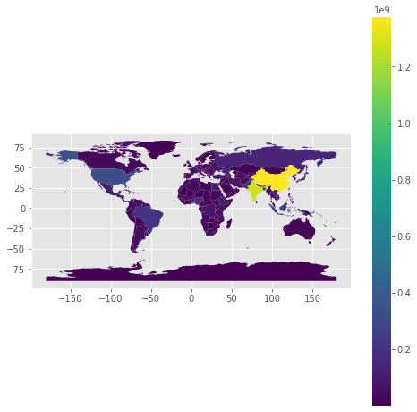
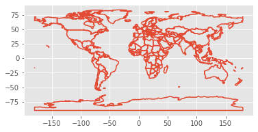

지리정보 시각화 소개
12.1. 지리정보 시각화 소개#
import os
#%pip install geopandas
import geopandas as gpd
import pandas as pd
import folium
import matplotlib.pyplot as plt
from folium import plugins
from shapely.geometry import Point, LineString, Polygon
plt.style.use('ggplot')
# 몆 가지 간단한 코드를 실행시켜본다.
print(gpd.__version__)
path_data = gpd.datasets.get_path('naturalearth_lowres')
print(path_data)
0.9.0
c:\Users\User\anaconda3\envs\tf2\lib\site-packages\geopandas\datasets\naturalearth_lowres\naturalearth_lowres.shp
gpd.read_file(path_data)
| pop_est | continent | name | iso_a3 | gdp_md_est | geometry | |
|---|---|---|---|---|---|---|
| 0 | 920938 | Oceania | Fiji | FJI | 8374.0 | MULTIPOLYGON (((180.00000 -16.06713, 180.00000... |
| 1 | 53950935 | Africa | Tanzania | TZA | 150600.0 | POLYGON ((33.90371 -0.95000, 34.07262 -1.05982... |
| 2 | 603253 | Africa | W. Sahara | ESH | 906.5 | POLYGON ((-8.66559 27.65643, -8.66512 27.58948... |
| 3 | 35623680 | North America | Canada | CAN | 1674000.0 | MULTIPOLYGON (((-122.84000 49.00000, -122.9742... |
| 4 | 326625791 | North America | United States of America | USA | 18560000.0 | MULTIPOLYGON (((-122.84000 49.00000, -120.0000... |
| ... | ... | ... | ... | ... | ... | ... |
| 172 | 7111024 | Europe | Serbia | SRB | 101800.0 | POLYGON ((18.82982 45.90887, 18.82984 45.90888... |
| 173 | 642550 | Europe | Montenegro | MNE | 10610.0 | POLYGON ((20.07070 42.58863, 19.80161 42.50009... |
| 174 | 1895250 | Europe | Kosovo | -99 | 18490.0 | POLYGON ((20.59025 41.85541, 20.52295 42.21787... |
| 175 | 1218208 | North America | Trinidad and Tobago | TTO | 43570.0 | POLYGON ((-61.68000 10.76000, -61.10500 10.890... |
| 176 | 13026129 | Africa | S. Sudan | SSD | 20880.0 | POLYGON ((30.83385 3.50917, 29.95350 4.17370, ... |
177 rows × 6 columns
world = gpd.read_file(gpd.datasets.get_path('naturalearth_lowres'))
world.plot(figsize=(8, 8),
column='pop_est',
categorical=False,
legend=True)
plt.show()
world.boundary.plot()
plt.show()

